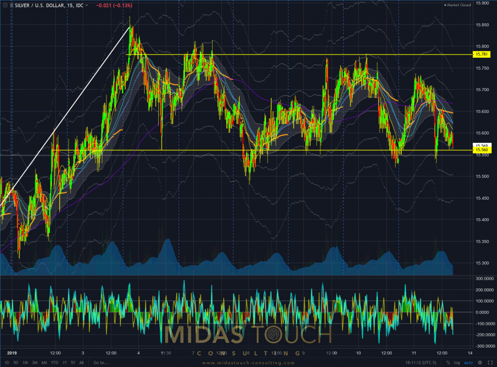
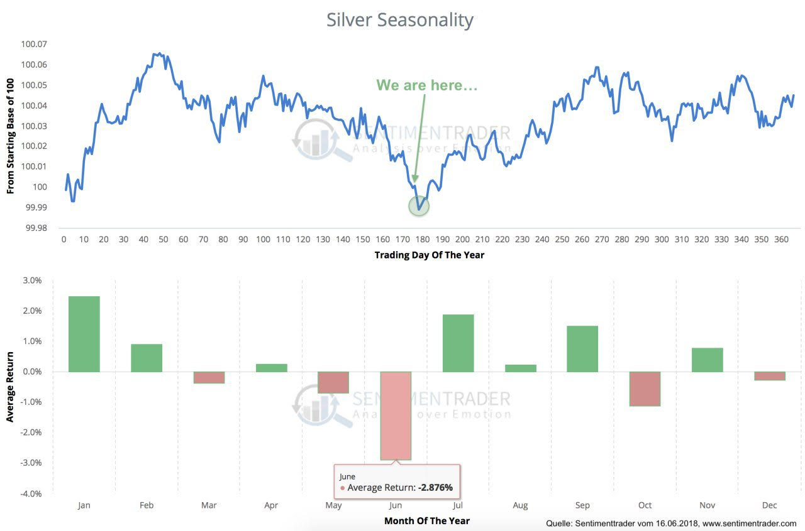
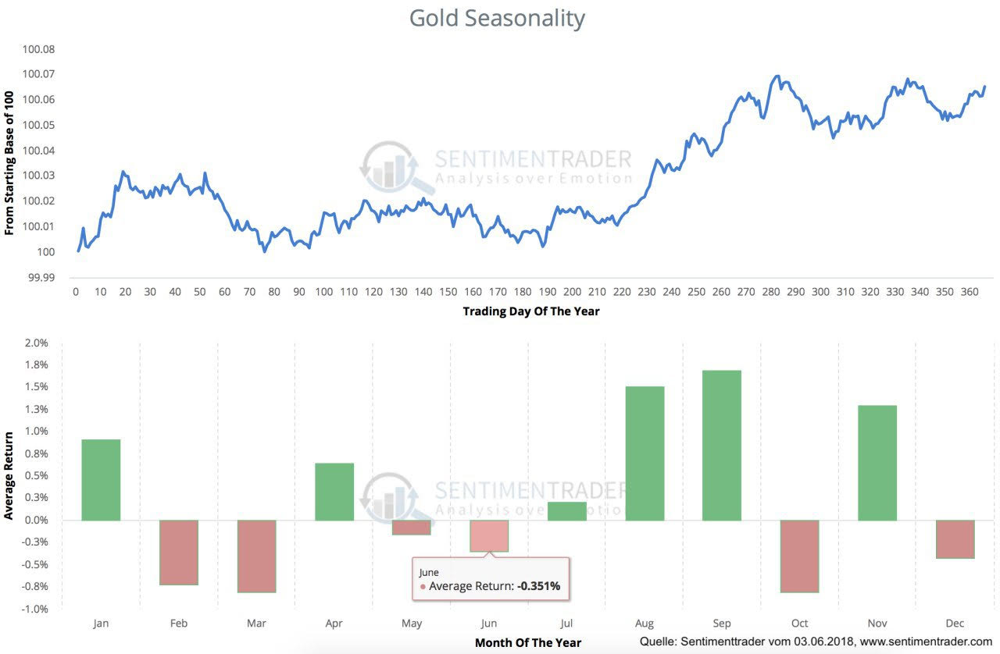
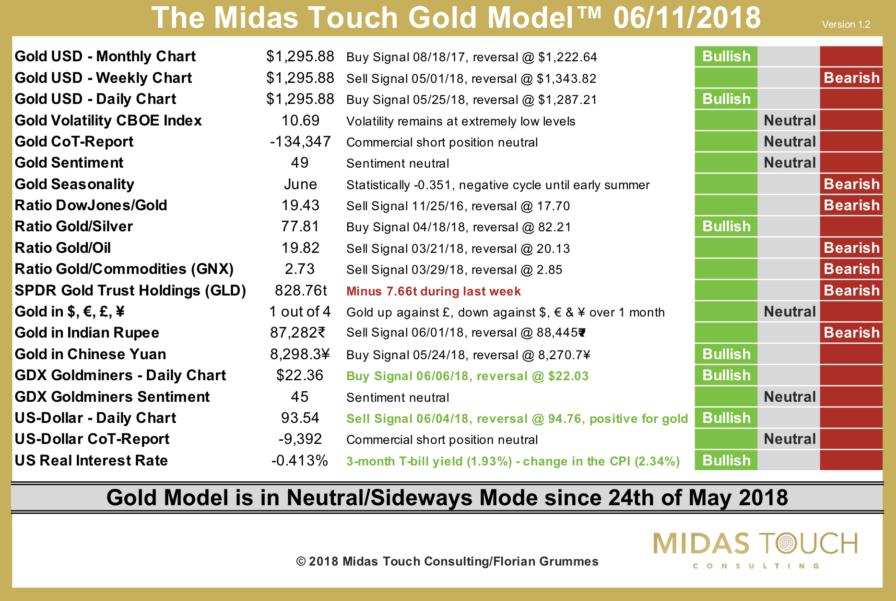
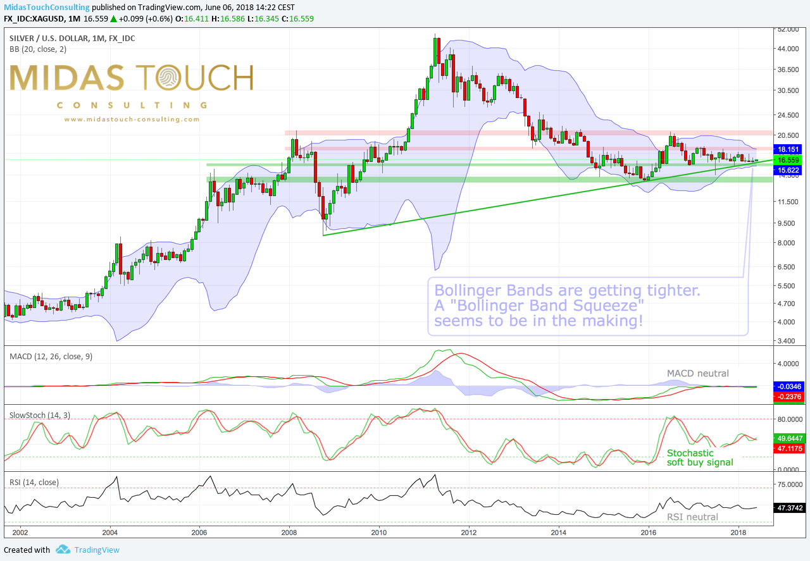

Latest analyses from Midas Touch Consulting
One important way of how to measure risk is viewing the market sliced through time. Simplified, one wants to know what the various competing forces are doing.
This 15 minute chart of Silver versus the US Dollar shows nicely of how the last seven daily periods price action fluctuated in a sideways channel after having peaked out near the $15.85 price level.

To see more, please visit: https://www.midastouch-consulting.com/silver-chartbook-12012019
Key Charts from Midas Touch Consulting (from 19th of June 2018)


To see more, please visit: https://www.midastouch-consulting.com/
Latest analyses from Midas Touch Consulting
The Midas Touch Gold Model™ continues to come up with a neutral conclusion. During last week´s quiet trading, gold barely moved at all. The trading range was 1,290 to 1,303 USD and volatility remains very low. But inside the model three positive developments have happened…

To see more, please visit: https://www.midastouch-consulting.com/midas-touch-gold-model-061118
Latest analyses from Midas Touch Consulting
Seven years since its top at 50 USD, most investors have probably given up on silver or sticking to their positions in pure resignation. But as already pointed out, silver might be one of the last real contrarian investments as it seems to be very undervalued at current price levels. Especially once inflation is picking up, silver should become one of the best performing assets! And with the current extremely low volatility its just logic to believe that sooner or later money will flow back into this tiny and forgotten market.

Let´s take an in depth look at silver from a fundamental (Part 1) and technical point of view to figure out the outlook for the next 6-12 months.
To see more, please visit: https://www.midastouch-consulting.com/silver-technical-analysis-060618